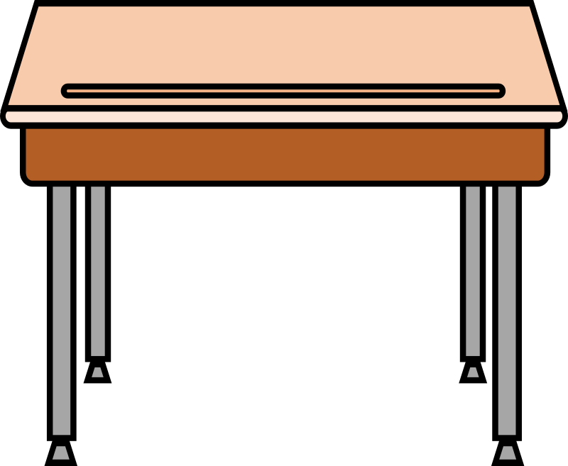
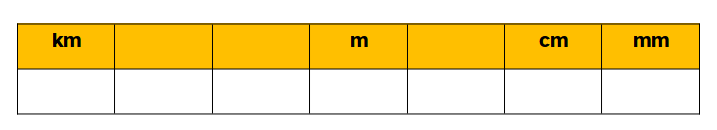

4.1. Estimar, comparar y convertir... esa es la cuestión
Diccionario
Truco
Definición:
Procedimiento ingenioso o hábil para conseguir algo. Trampa o habilidad para producir efectos de ilusionismo.
Ejemplo:
.
Trampa
Definición:
Plan o acción que tiene con fin engañar a una persona.
Ejemplo:
Nosotros caímos en la trampa al intentar resolver el problema.
Ya que hemos aprendido qué son los km, cm y mm, y además hemos recordado que es el metro...
Nos toca una parte muy muy importante... Y es saber usar bien todas estas unidades, ¡esa es la clave!
Vamos a aprender a estimar, comparar y convertir las unidades de medida, y de este modo Rétor y su pandilla seguirán confundidos.
Lectura facilitada
Hemos aprendido qué son los kilómetros, centímetros y milímetros.
Hemos recordado que es el metro.
Todas estas unidades de medida las aprenderemos bien.
¡Esa es la clave!
Aprenderemos a:
Estimar las unidades de medida.
Comparar las unidades de medida.
Convertir las unidades de medida.
Para qué Rétor y su pandilla se confundan.
1. Estimación, comparación y conversión
A continuación vamos a conocer que es estimar, comparar y convertir.
Cuando estimamos, comparamos y convertimos estamos trabajando con las unidades de medida, y para ello debemos seguir unas reglas, sobre todo para pasar de unas unidades a otras, es decir, para convertir unidades.
Conoceremos algunos trucos que Rétor el pirata no conoce, y los practicaremos con algunas actividades. ¡Ánimo!
Definición: Procedimiento ingenioso o hábil para conseguir algo. Trampa o habilidad para producir efectos de ilusionismo. Ejemplo: .
Lectura facilitada
Aprenderemos a:
Estimar unidades de medida.
Comparar unidades de medida.
Convertir unidades de medida.
Trabajamos con las unidades de medida cuando:
Estimamos unidades.
Comparamos unidades.
Convertimos unidades.
Seguiremos unas reglas.
Las reglas son importantes para todas las actividades
pero más cuando convertimos unidades.
Convertir unidades
es pasar una unidad a otra unidad diferente.
Conoceremos algunos trucos
que Rétor el pirata no conoce.
Practicaremos con algunas actividades.
¡Ánimo!
1. Estimamos
ESTIMAR es decir más o menos lo que mide un objeto, o una distancia concreta. Es muy importante que sepamos estimar, para así poder hacernos a la idea de cuanto mide un objeto, ver si la mesa que me gusta para mi cuarto me cabe, o bien como de lejos está el polideportivo de mi casa, por ejemplo.

1 grano de arroz mide 5mm aproximadamente
1 folio mide aproximadamente 30 cm

1 mesa del alumnado mide ancho aproximadamente 1 metro
10 largos de un campo de fútbol seguidos son aproximadamente 1 km
2. Comparamos
COMPARAR significa observar y después decir qué es mas grande o más pequeño. Para ello usaremos los signos > y <.
Para comprender el significado de los signos < y > te animamos a que observes estas torres hechas con ladrillos, una pequeña rampa entre ambas y una pelota de tenis.
Como puedes ver la flecha marca la dirección de la pelota. Por eso en este caso, el signo se escribe >.
Como puedes ver la flecha marca la dirección de la pelota. Por eso en este caso, el signo se escribe <.
3. Convertimos
CONVERTIR es pasar de una unidad de medida a otra, respetando las equivalencias. Sobre todo usaremos este paso cuando nos pidan que tenemos que comparar 2 unidades de longitud distintas.
Para convertir, te animo que uses la siguiente tabla.

Te explico como hacerlo. Imagina que tienes que comparar 3 cm y 5 mm.
1º. Nos fijamos que no tienen la misma unidad.
2º. Vemos qué unidad es la menor de las dos, en este caso, los mm, y ese número NO lo vamos a convertir.
3º. El otro número, el que tiene la mayor unidad de medida, será el que cambiemos. Para ello lo escribimos en la tabla justo debajo de la medida. En este caso escribimos 3 debajo de cm.
4º. A continuación recordamos que tenemos que llegar hasta mm, la más pequeña, y escribimos un 0 debajo de cada cuadro hasta que lleguemos. En este caso, hemos tenido que escribir solo un 0.
5º. Ya hemos convertido los 3 cm a mm, y resulta que son 30 mm. Ahora SÍ que podemos compararlas, y resulta que 30 mm es mayor (>) que 5 mm.
Así que 3 cm > 5 mm.
Además de la tabla de conversión de unidades, es muy importante que entiendas estas equivalencias:
1 km
1.000 m
1 m
100 cm
1 m
1.000 mm
1 cm
10 mm
2. Midamos y comprobemos...
Ahora os proponemos una actividad grupal, un reto. Para ello os dividiréis en grupos de 4-5 personas, si dudáis preguntadle a vuestra maestra o maestro y os ayudará a repartiros.
Primer paso
Una vez que estéis en grupos, sin levantaros de la mesa, deberéis decidir entre todas las personas del grupo cuanto creéis que miden las siguientes distancias u objetos. No olvidéis indicar la unidad que pensáis que es la adecuada.
A. El ancho de la clase.
B. El largo de una de las libretas que decidáis en el grupo.
C. El ancho y largo de una pista de baloncesto.
D. La distancia al pueblo o ciudad más cercana a vuestro cole (si tenéis duda preguntad a vuestro maestro o maestra)
Segundo paso
Ahora sí que os podréis levantar, y estimar si la medida que habéis puesto, creéis que está bien. Podéis usar las unidades de medida no convencionales que conocemos, o bien "los truquitos" que hemos visto más arriba.
Te propongo otro truco para estimar... Sobre todo la medida del ancho de la clase. Seguramente el suelo de vuestra clase esté hecho con baldosas cuadradas, que suelen tener aproximadamente 30 cm como medida.
Tercer paso
Ahora sí... Busca tu regla o tu cinta métrica y mide con ellas el ancho de la clase y el largo de la libreta.
Para ver el ancho y largo de una pista de baloncesto y la distancia al pueblo o ciudad más cercano a tu colegio usa alguna herramienta de Internet o pide ayuda a la maestra o maestro.
Ahora podéis reflexionar sobre las 3 columnas con medidas... ¿Hay mucha variación entre ellas? ¿Habías elegido la unidad correcta? ¿Ha sido muy difícil estimar sin levantaros?
Lectura facilitada
Trabajamos en grupo.
Proponemos un reto.
Dividiros en grupos de 4- 5 personas.
Preguntadle a vuestra maestra o maestro.
El maestro o maestra ayudará a repartiros.
PRIMER PASO
Sentados por grupos.
Decidiréis las medidas de las siguientes distancias u objetos:
A. El ancho de la clase.
B- El largo de una de vuestras libretas.
C- El ancho y largo de una pista de baloncesto.
D- La distancia al pueblo o la ciudad más cercana a vuestro cole.
Preguntad a vuestro maestro o maestra las dudas.
Indicad la unidad más adecuada.
SEGUNDO PASO
Levantados por grupos.
Estimar si la medida elegida está bien.
Podéis usar las unidades de medida no convencionales o "los truquitos".
Proponemos un truco
para estimar la medida del ancho de la clase.
El suelo de vuestra clase está hecho con baldosas cuadradas.
Las baldosas cuadradas miden 30 centímetros.
TERCER PASO
Busca tu regla o cinta métrica.
Mide con la regla o la cinta métrica:
El ancho de la clase.
El largo de la libreta.
Para medir:
el ancho y largo de una pista de baloncesto.
la distancia al pueblo o ciudad más cercano a tu colegio
Usa alguna herramienta de Internet.
Pide ayuda a la maestra o maestro.
Reflexionar sobre las 3 columnas con medidas.
Pregúntate:
Si hay mucha variación entre ellas.
Si habéis elegido la unidad correcta.
Si ha sido muy difícil estimar sin levantaros.
Puedes descargar la ficha y rellenarla. Acuérdate de guardarla cuando acabes. También puedes imprimirla y rellenarla en papel.
Utiliza esta
ficha para realizar la actividad. Pincha aquí para descargar.
Búsqueda de información
Para llegar a una meta, es conveniente que seas un buen o buena estratega. Es decir, tener métodos, técnicas, “trucos” para llegar antes o de forma más fácil donde tú quieres.
Ahora te voy a enseñar una estrategia.
La estrategia es búsqueda de información. Es importante saber buscar y saber elegir la información que es necesaria para poder resolver las tareas. También es fundamental que antes de responder a cualquier actividad, es necesario que comprendas la información que tienes, porque si no entiendes lo que lees no podrás realizar la tarea ni aprender nada nuevo. Para ello es conveniente localizar los puntos críticos o difíciles.

 Ya que hemos aprendido qué son los km, cm y mm, y además hemos recordado que es el metro...
Ya que hemos aprendido qué son los km, cm y mm, y además hemos recordado que es el metro... A continuación vamos a conocer que es estimar, comparar y convertir.
A continuación vamos a conocer que es estimar, comparar y convertir.